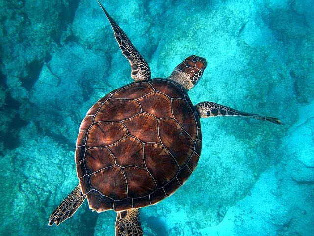
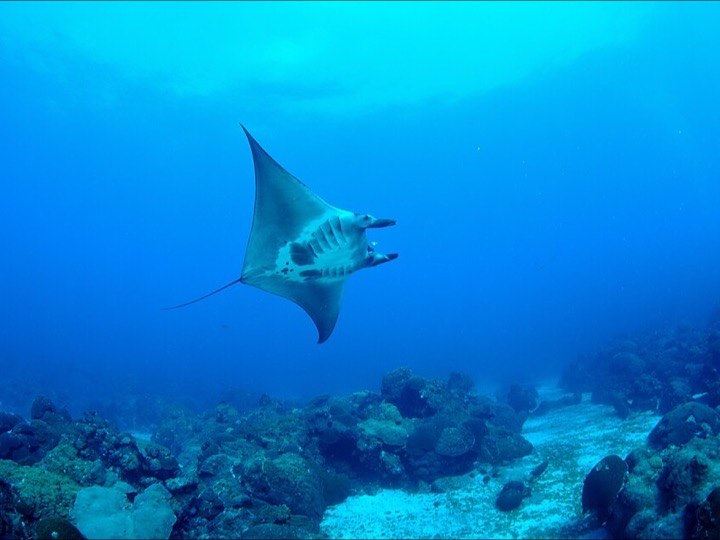
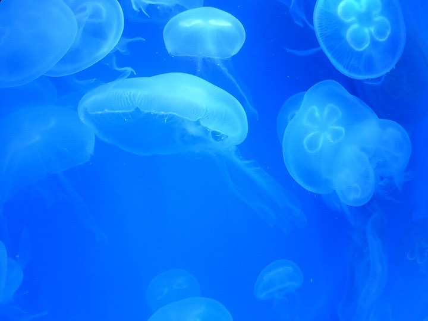
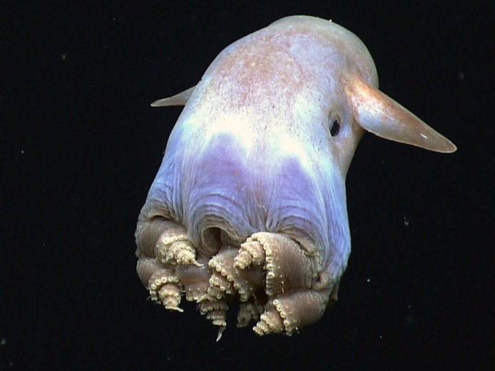

Sunlight zone
Green sea turtle
Grown-up green turtles eat seagrass and seaweed. They are named after the green colour of their fat, not their shell.
Every animal here hides a secret fact. Point at a card, or press the Tab key, to read it.

Sunlight zone
Grown-up green turtles eat seagrass and seaweed. They are named after the green colour of their fat, not their shell.
Sunlight zone
The biggest animal that has ever lived, bigger than any dinosaur. Yet it eats krill: tiny animals that look like shrimp.

Sunlight zone
Every manta has its own pattern of spots on its belly, like a fingerprint.

Sunlight zone
Jellyfish were drifting in the sea more than 500 million years ago, long before the dinosaurs.
Sunlight zone
The dad carries the eggs in a pouch on his belly until the babies hatch.

Abyss
Like every octopus, it has three hearts and blue blood.
Midnight zone
The light on her rod is made by tiny bacteria that live inside it.
Sunlight zone
It can grow back an arm it has lost. It also has a tiny eye at the end of each arm.